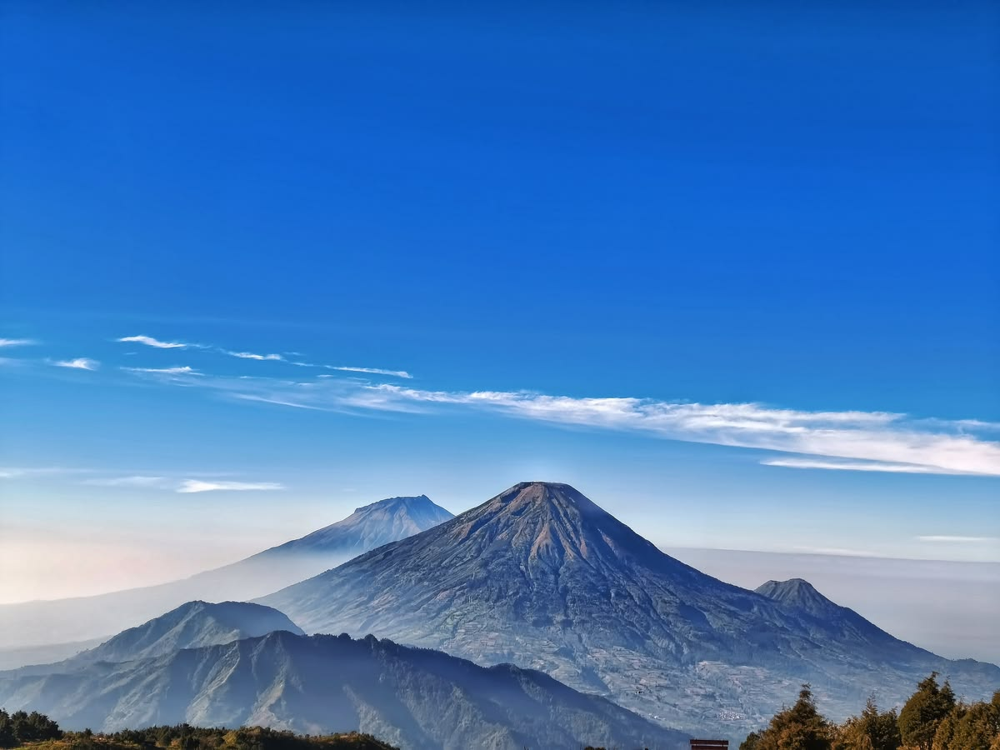
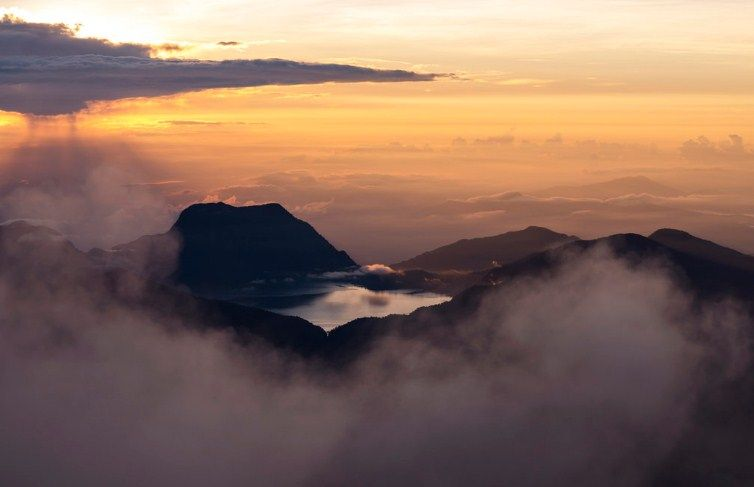
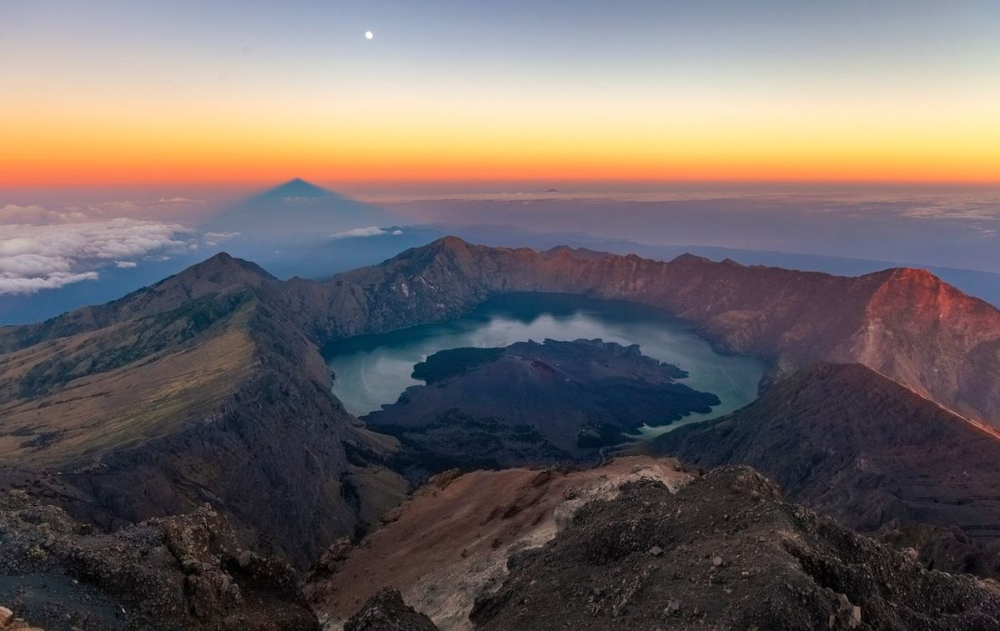
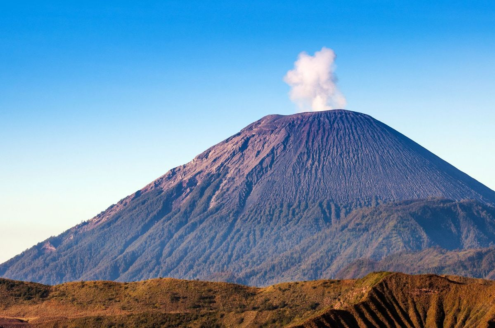

Data Pegunungan dan Puncak Utama di Indonesia
Berikut adalah tabel informasi mengenai beberapa kawasan pegunungan penting beserta foto dan puncak utamanya:
| No | Foto Gunung | Nama Pegunungan / Gunung | Lokasi (Wilayah) | Ketinggian (mdpl) | Status Gunung |
|---|---|---|---|---|---|
| 1 |
 |
Pegunungan Jayawijaya (Puncak Jaya) | Papua Tengah | 4.884 | Tidak Aktif (Puncak Salju) |
| 2 |
 |
Pegunungan Barisan (Gunung Kerinci) | Sumatra Barat / Jambi | 3.805 | Aktif (Volkanik) |
| 3 |
 |
Gunung Rinjani | Nusa Tenggara Barat | 3.726 | Aktif (Volkanik) |
| 4 |
 |
Gunung Semeru | Jawa Timur | 3.676 | Aktif (Volkanik) |
Panduan Kategori Pendakian
- Pemula: Gunung Prau, Gunung Andong.
- Menengah: Gunung Gede, Gunung Merbabu.
- Ahli/Pro: Gunung Leuser, Pegunungan Jayawijaya.